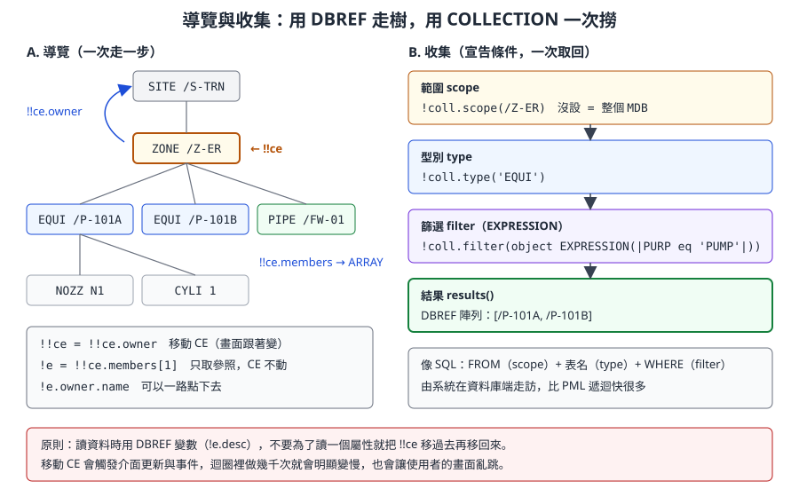
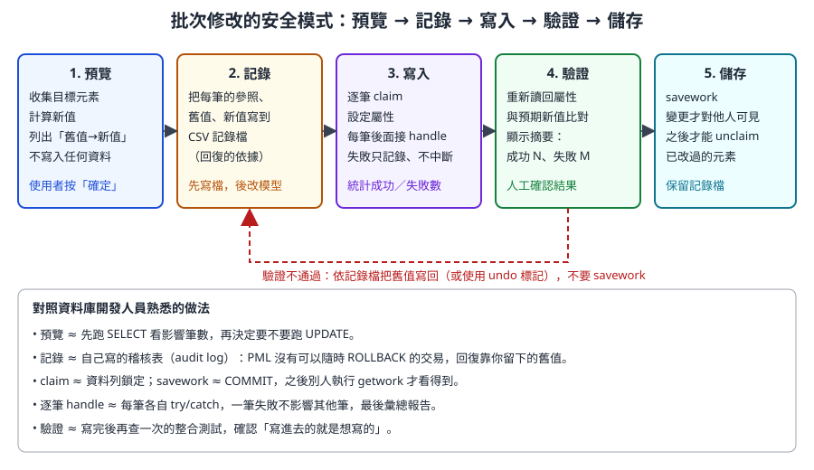
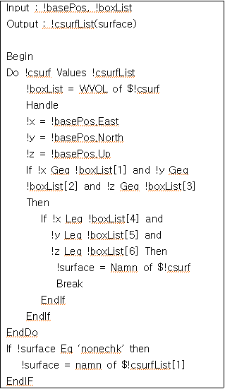
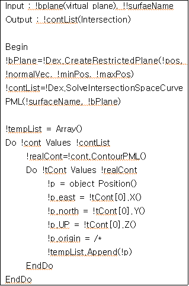
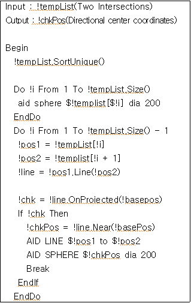

第 12 章 PML 資料庫操作
本章把第 3 章的資料階層與第 11 章的 PML 語言接起來：如何用程式在元素樹上移動、讀取屬性、查詢一批元素、建立、修改與刪除元素，以及如何在多人共用的專案中安全地寫入（認領、儲存、回復）。最後用一篇學術論文附的實機 PML 程式截圖練習「讀懂真實程式」。
語法依據 AVEVA E3D 2.1 PML Customisation User Guide 與 Software Customisation Reference Manual、E3D 2.1 Common Functionality（help.aveva.com 公開頁面）、Kim, Park & Yang（2020）論文的實機截圖，以及 AVEVA Marine 12.1 SP4 開源範例（MIT 授權）。AVEVA Marine 的舾裝資料庫承襲 PDMS，與 E3D 的資料存取方式高度相同，但個別命令與屬性可能有版本差異。標示「-- 示意」的程式為本課程自行撰寫、未在實機驗證；所有會修改資料的程式只能在訓練專案中執行。
12.1 學習目標
讀完本章，你應該能夠：
- 用
!!ce、OWNER、MEMBERS與元素名稱在資料樹上導覽，並說明「移動 CE」與「持有參照」的差別。 - 用點號讀取屬性、偽屬性、參照屬性與 UDA，並說明命令
Q與程式取值的差異。 - 用
COLLECTION與EXPRESSION物件查詢一批元素，也看得懂 PML1 的var ... collect與var ... evaluate。 - 建立元素並設定屬性；修改、移動、重新命名元素；刪除元素前做相依檢查。
- 說明 claim、savework、getwork 的作用，以及 undo 標記。
- 依「預覽 → 記錄 → 寫入 → 驗證 → 儲存」的安全模式寫批次修改工具。
- 寫出效能合理的查詢程式。
- 讀懂真實專案中混用 PML1 與 PML2 的資料庫程式。
12.2 心智模型：用開發人員的語言看 Dabacon
| AVEVA 概念 | 開發人員對照 | 本章用法 |
|---|---|---|
| 元素樹 | XML DOM、檔案系統目錄樹 | 導覽、走訪 |
| DBREF | 指向節點的指標；資料列的主鍵 | !e = !!ce、!e.owner |
名稱 /P-101A |
唯一的路徑別名（像檔案的完整路徑） | !e = /P-101A |
| 參照屬性（CREF、SPRE…） | 外鍵 | !!ce.cref.pspec.rating |
| CE（Current Element） | 游標；命令的預設操作對象 | !!ce = !e |
| COLLECTION | 查詢建構器（SELECT … FROM … WHERE） | !coll.results() |
| claim | 資料列鎖定 | CLAIM |
| savework | COMMIT | SAVEWORK |
| getwork | 重新整理，看到別人已提交的變更 | GETWORK |
| undo 標記 | 應用程式層級的復原堆疊 | MARKDB／ENDMARKDB |
PML 存取資料庫有兩種風格，同一個程式常會混用：
| 風格 | 寫法 | 特點 |
|---|---|---|
| 物件存取（PML2） | !d = !e.desc、!e.desc = 'x' |
有型別、可在運算式中使用、不必移動 CE |
| 命令（PML1） | /P-101A、DESC 'x'、NEW EQUI /X、Q DESC |
對 CE 操作；與手動在命令列輸入完全相同 |
圖片內容：模型樹、3D 畫面中的泵與關聯面板：設計人員在介面上看到的樹，就是 PML 導覽的資料樹
圖 12-1 舾裝設計模組的模型樹與 3D 畫面。左側樹狀結構就是 PML 中 owner／members 走訪的對象，選取的元素就是 CE。來源：AVEVA Hull and Outfitting Datasheet。
12.3 導覽
12.3.1 !!ce：目前元素
官方文件說明：全域變數 !!ce 永遠指向目前元素，型別是 DBREF。可以把它複製到變數，也可以指定新參照給 !!ce 來移動 CE。
!item = !!ce -- 取得目前元素的參照（CE 不動）
!owner = !!ce.owner -- 讀取擁有者
!!ce = !!ce.owner -- 移動 CE 到擁有者（畫面跟著變）
12.3.2 取得元素參照的幾種方式
| 方式 | 寫法 | 說明 |
|---|---|---|
| 目前元素 | !e = !!ce |
最常用 |
| 名稱字面值 | !e = /P-101A |
名稱以 / 開頭，可以直接當 DBREF 使用 |
| 字串轉換 | !e = !text.dbref() |
名稱來自使用者輸入或檔案時 |
| 擁有者 | !e = !e.owner |
往上一層 |
| 成員 | !kids = !e.members |
回傳 DBREF 陣列；!kids[1] 是第一個成員 |
| 參照屬性 | !spec = !e.spref |
沿著外鍵走到另一個元素（屬性名稱依元素型別而定） |
| 命令導覽 | /P-101A、OWNER 等命令 |
移動 CE，等同在命令列輸入 |
官方範例中的「一路點下去」：
!Rating = !!CE.cref.pspec.rating -- 沿著兩層參照讀取壓力等級
!Dir = !!CE.Pdirection[1] -- 第 1 個 P 點的方向（DIRECTION）
!Pos = !!CE.Pposition[3] -- 第 3 個 P 點的位置（POSITION）
12.3.3 檢查參照是否有效
if (!ref eq NULREF) then -- 參照未設定
...
endif
if (unset(!ref)) then -- 同上（NULREF 視為 UNSET）
...
endif
if (badref(!ref)) then -- 未設定，或無法導覽（例如已刪除、不在 MDB 中）
...
endif

圖 12-2 兩種取得元素的方式。導覽適合「沿著關係走幾步」；收集適合「找出所有符合條件的元素」。（本課程自繪）
開發人員須知：
!!ce = ...會真的移動使用者的游標，介面會更新、事件會觸發。讀資料時請用變數持有參照（!e.desc），不要「移過去讀完再移回來」。只有在必須使用 PML1 命令（命令預設作用在 CE）時才移動 CE，並在結束時把 CE 還原到使用者原本的位置。
12.4 讀取屬性
12.4.1 點號存取
!e = /P-101A
!name = !e.name -- '/P-101A'
!type = !e.type -- 元素型別，例如 'EQUI'
!desc = !e.desc -- 描述（可能未設定）
!pos = !e.position -- POSITION 物件
!flnn = !e.flnn -- 完整名稱（不含開頭斜線），開源範例用來顯示
官方建議使用屬性的完整名稱（參考 Data Model Reference Manual 附錄），以確保與未來版本相容。例如程式中寫 position 比縮寫 pos 更穩定；命令列手動輸入時用縮寫則沒有問題。
12.4.2 屬性的種類（複習第 3 章）
| 種類 | 例子 | 讀法 | 注意 |
|---|---|---|---|
| 系統屬性 | NAME、TYPE、OWNER、MEMBERS | !e.owner |
部分唯讀 |
| 一般屬性 | DESC、PURPOSE、FUNCTION | !e.desc |
可能未設定 |
| 幾何屬性 | POSITION、ORIENTATION、XLEN | !e.position |
回傳 POSITION 等物件 |
| 參照屬性 | CREF、SPREF、PSPEC | !e.spref |
回傳 DBREF，可能是 NULREF |
| 偽屬性 | FLNN、WVOL | !e.flnn |
系統即時計算，不能寫入 |
| UDA | 公司自訂，如 :MYCOSTATUS |
!e.:MYCOSTATUS |
名稱以冒號開頭〔寫法待核對〕 |
12.4.3 Q 與程式取值的差別
| 面向 | 命令 Q DESC |
程式 !d = !e.desc |
|---|---|---|
| 對象 | 目前元素（CE） | 任何 DBREF |
| 結果 | 印到命令列的文字 | 有型別的值，存在變數中 |
| 能否後續運算 | 不能（只是輸出） | 能 |
| 用途 | 人工查詢、探索屬性名稱 | 工具程式 |
| 列出全部 | Q ATT 列出 CE 的所有屬性 |
先用 Q ATT 找到名稱，再寫進程式 |
探索新元素型別時的工作流程：在介面中選取一個元素，命令列輸入 Q ATT 看有哪些屬性與值，再挑需要的寫進程式。
12.4.4 範例：描述一個元素
-- 示意：mycodescribe.pmlfnc 印出元素的基本資訊（唯讀）
define function !!mycoDescribe(!e is DBREF)
if (badref(!e)) then
$P 無效的元素參照
return
endif
!name = !e.flnn
!type = !e.type.string()
!own = !e.owner.flnn
$P 名稱：$!name
$P 型別：$!type
$P 擁有者：$!own
!d = !e.desc
handle ANY
!d = '(無法讀取)'
endhandle
$P 描述：$!d
!kids = !e.members
!n = !kids.size()
$P 成員數：$!n
endfunction
call !!mycoDescribe(!!ce)
12.5 查詢：COLLECTION、EXPRESSION 與 PML1 的 collect／evaluate
12.5.1 COLLECTION 物件
官方說明：COLLECTION 物件以「篩選運算式（EXPRESSION 物件）、型別限制、範圍清單」從系統中取出資料庫元素。常用方法：
| 類別 | 方法 | 說明 |
|---|---|---|
| 範圍 | .scope(DBREF) |
清除並設定範圍；沒有設定範圍時，範圍是整個 MDB |
.addscope(DBREF)、.scope(DBREF 陣列)、.clearscope() |
增加、取代、清除範圍 | |
| 型別 | .type(STRING) |
清除並設定一個型別 |
.addtype(STRING)、.types(陣列)、.cleartypes() |
增加、取代、清除型別 | |
| 篩選 | .filter(EXPRESSION)、.clearfilter() |
設定、清除篩選條件 |
| 結果 | .results() |
全部結果（DBREF 陣列） |
.size() |
結果數量 | |
.next(n)、.index()、.initialise() |
分批取回、目前位置、重新評估並把位置設回 1 |
12.5.2 EXPRESSION 物件
EXPRESSION 是一段 PML1 運算式，讓 COLLECTION 在資料庫端篩選：
| 方法 | 說明 |
|---|---|
object EXPRESSION(STRING) |
以字串建立運算式，例如 'PURP eq |PUMP|' 一類 |
.attributeexpression(STRING) |
把屬性名稱變成運算式；官方說明 AttributeExpression('LENGTH') 等同 Expression('ATTRIBUTE LENGTH') |
.evaluate(DBREF) |
對某個元素求值，回傳結果 |
.string() |
取回運算式字串 |
官方也說明，讀屬性的運算式寫成 ATTRIBUTE 名稱 形式，速度與效率較好。
12.5.3 範例：找出某範圍內特定用途的設備
-- 示意：mycofindequi.pmlfnc 依 PURPOSE 找設備（唯讀）
define function !!mycoFindEqui(!scope is DBREF, !purp is STRING) is ARRAY
!coll = object COLLECTION()
!coll.scope(!scope)
!coll.type('EQUI')
if (not !purp.empty()) then
!expr = object EXPRESSION('PURP eq |' & !purp & '|')
!coll.filter(!expr)
endif
return !coll.results()
endfunction
!pumps = !!mycoFindEqui(/Z-ER, 'PUMP')
q var !pumps.size()
do !p values !pumps
!n = !p.flnn
$P $!n
enddo
| 程式片段 | 說明 |
|---|---|
!coll.scope(!scope) |
一定要設範圍，否則會搜尋整個 MDB |
'PURP eq |' & !purp & '|' |
外層用單引號，運算式內的字串用 |...|，避免引號衝突 |
not !purp.empty() |
空字串時不加篩選 |
回傳 ARRAY |
回傳的是 DBREF 陣列，呼叫端再決定要讀哪些屬性 |
專業提醒： 篩選運算式的語法屬於 PML1 運算式，屬性名稱、比較運算子與字串分隔方式請以公司版本的參考手冊確認〔待核對〕。先在命令列用
!x = object EXPRESSION(...)與!x.evaluate(!!ce)測試運算式，再放進程式。
12.5.4 PML1 寫法：var collect 與 var evaluate
既有程式中常見 PML1 的查詢寫法：
var !list collect all EQUI for /Z-ER
這行把 /Z-ER 底下所有 EQUI 收集到陣列 !list（元素通常是參照的文字表示，使用前可用 .dbref() 轉換〔待核對〕）。
官方說明的 evaluate 形式，可以對每個選取的元素計算運算式，結果存入陣列：
VAR !Array EVALUATE (Expression) FOR select COUNTVAR !Counter
VAR !BOXES APPEND EVALUATE ( XLEN*YLEN ) FOR ALL BOXES
| 部分 | 說明 |
|---|---|
!Array |
存放結果的陣列 |
(Expression) |
對每個元素計算的運算式 |
select |
選取條件，例如 ALL BOXES（語法見產品參考手冊） |
COUNTVAR !Counter |
選用，記錄計算次數 |
APPEND |
附加到既有陣列而不是覆蓋 |
| 需求 | 建議寫法 |
|---|---|
| 新程式、需要 DBREF 再做其他處理 | COLLECTION |
| 只需要每個元素的一個計算值（例如面積） | var ... evaluate，一次取回，最省事 |
| 維護舊程式 | 看得懂 var ... collect 即可，不必急著改寫 |
12.6 建立元素
12.6.1 NEW 命令
建立元素使用 PML1 命令 NEW，它作用在 CE 上：
-- 示意：在訓練 ZONE 下建立設備與一個方塊
/Z-TRAINING -- 1. 先把 CE 移到合法的擁有者
NEW EQUI /T-EQUI-001 -- 2. 建立設備並命名；完成後 CE 就是新設備
DESC 'Created by myco training' -- 3. 設定 CE 的屬性（命令風格）
NEW BOX XLEN 500 YLEN 400 ZLEN 300 -- 4. 在設備底下建立一個方塊
建立的規則（複習第 3 章「合法成員」）：
- 新元素的型別必須是擁有者型別的合法成員，例如 EQUI 要放在 ZONE 底下，BOX 要放在 EQUI 底下。
- 名稱在整個 MDB 中必須唯一；名稱重複時命令會失敗。
- 建立完成後，CE 會移到新元素〔CE 不是合法擁有者時系統如何決定插入位置，依版本行為待核對〕。
- 寫入前必須有該資料庫的寫入權限，explicit claim 模式下還要先 claim 擁有者（12.9 節）。
12.6.2 在函式中建立：$! 展開與錯誤處理
-- 示意：mycocreatetestequi.pmlfnc 建立測試設備（只能在訓練專案使用）
define function !!mycoCreateTestEqui(!zone is DBREF, !name is STRING) is DBREF
if (!name.substring(1, 1) ne '/') then
return error 1 '名稱必須以 / 開頭'
endif
!back = !!ce -- 記住使用者原本的 CE
!!ce = !zone
NEW EQUI $!name
handle ANY
!!ce = !back
return error -- 把原始錯誤交給呼叫者
endhandle
!equi = !!ce
!equi.desc = 'Created by myco training'
!posText = 'E 1000 N 2000 U 0'
!equi.position = !posText.position()
!!ce = !back -- 還原 CE
return !equi
endfunction
| 程式片段 | 說明 |
|---|---|
| 檢查名稱開頭 | $!name 是文字替換，輸入格式錯誤會讓命令變成意料之外的樣子 |
!back = !!ce |
工具結束時把 CE 還原，不打亂使用者的工作 |
NEW EQUI $!name 後接 handle |
名稱重複、權限不足都會在這行失敗 |
return error |
不吞掉錯誤，交給呼叫者決定如何提示 |
!equi.desc = ... |
建立後改用物件存取設定屬性 |
.position() |
把位置字串轉成 POSITION 物件（STRING 物件的方法） |
12.7 修改元素
12.7.1 設定屬性
官方說明：只要新值的型別與屬性型別相符，就可以直接指定，而且不必是目前元素：
!!CE.Built = TRUE -- 設定目前元素
!A = !!CE
!!CE = !!CE.Owner
!A.Built = TRUE -- 設定非目前元素
屬性本身是物件（例如 POSITION）時，不能只改其中一個成員，要先取出、修改、再整個指定回去：
!Pos = !!CE.Position
!Pos.Up = 2000
!!CE.Position = !Pos
對照：這和 C# 中修改 struct 屬性的規則一樣：obj.Pos.Y = 5 不會生效，必須 var p = obj.Pos; p.Y = 5; obj.Pos = p;。
12.7.2 常見修改動作
| 動作 | 物件風格 | 命令風格（作用在 CE） | 備註 |
|---|---|---|---|
| 改描述 | !e.desc = 'xxx' |
DESC 'xxx' |
|
| 改位置 | !e.position = !pos |
POS E 1000 N 2000 U 0 |
位置語法見第 4 章 |
| 相對移動 | 取出 POSITION 後加減再指定 | BY E 100〔待核對〕 |
|
| 改方向 | !e.orientation = !ori |
ORI Y is N and Z is U |
|
| 重新命名 | 〔以屬性指定名稱的寫法待核對〕 | NAME /NEW-NAME |
名稱必須唯一 |
| 取消名稱 | UNNAME |
||
| 改參照 | !e.spref = !spco |
SPREF /... |
參照錯誤會產生錯誤材料表（第 8 章） |
專業提醒： 設定參照屬性（特別是等級、目錄相關的 SPREF、PSPEC）等於改外鍵。工具不應該自己「找一個看起來像的」元件填進去；正確做法是依等級選擇規則取得，或由使用者明確選定（第 8 章）。
12.8 刪除元素與相依檢查
-- 示意：刪除目前元素（必須是 EQUI）
/T-EQUI-001
DELETE EQUI
DELETE 型別 刪除的是 CE，而且型別必須與 CE 相符，這是一道防呆。刪除會連同所有成員一起刪掉（整棵子樹）。
刪除前要問：有沒有別的元素參照它？ 資料庫中的參照就像外鍵，刪掉被參照的一方，另一方就會留下懸空參照。例如設備的管嘴（NOZZ）可能被管線分支的頭尾參照。一個簡單的檢查方式是看管嘴的連接參照：
-- 示意：mycocandelete.pmlfnc 刪除設備前檢查管嘴是否已連接
define function !!mycoCanDelete(!equi is DBREF) is BOOLEAN
!coll = object COLLECTION()
!coll.scope(!equi)
!coll.type('NOZZ')
!nozzles = !coll.results()
do !nz values !nozzles
!conn = !nz.cref
handle ANY
!conn = NULREF
endhandle
if (not badref(!conn)) then
!nzName = !nz.flnn
!cnName = !conn.flnn
$P 管嘴 $!nzName 已連接到 $!cnName，不可刪除
return FALSE
endif
enddo
return TRUE
endfunction
這個檢查只涵蓋「管嘴連接」一種關係。實際專案中，圖面、材料表、支架、Global 衍生資料庫都可能參照同一個元素。自動刪除工具的風險很高，建議只做「標記待刪」（例如寫入 UDA 或產生清單），由人工確認後刪除。
12.9 認領、儲存與復原
12.9.1 claim：寫入前的鎖定
多人同時編輯的資料庫（multiwrite）使用認領機制，避免兩個人同時修改同一個元素。官方說明：
| 項目 | 說明 |
|---|---|
| 認領模式 | 建立資料庫時決定。Explicit：修改前必須先 CLAIM；Implicit：修改時自動認領，也可以先手動認領 |
| 可認領的對象 | 只有「主要元素」（significant／primary element）。認領非主要元素時，系統會認領它上方最近的主要元素 |
| 認領範圍 | 只認領指定元素，或連同其下所有主要元素（CLAIM /ZoneA HIERARCHY） |
| 釋放 | UNCLAIM 名稱、UNCLAIM ALL；切換模組或離開時自動釋放全部 |
| 限制 | 修改過的元素在 savework 之前不能 unclaim |
| Extract 資料庫 | 還要考慮 extract claim（第 2 章） |
-- 示意：認領後修改
CLAIM /T-EQUI-001
handle ANY
$P 無法認領（可能被他人占用或沒有寫入權限）
return
endhandle
!e = /T-EQUI-001
!e.desc = 'Updated by myco'
12.9.2 savework 與 getwork
| 命令 | 作用 | 資料庫對照 |
|---|---|---|
SAVEWORK |
把這段時間的變更寫入資料庫，對其他使用者可見 | COMMIT |
GETWORK |
取得其他使用者已 savework 的變更 | 重新查詢最新資料 |
| 不 savework 就離開 | 變更不會保存〔離開模組時的提示與行為依版本而定，待核對〕 | ROLLBACK |
開發人員須知： 工具不應該自動執行 SAVEWORK。 savework 是使用者「確認這批變更」的動作，就像資料庫工具不會替你自動 COMMIT。工具做完修改後，顯示摘要，請使用者檢查無誤後自己按 Save Work。這也讓「驗證不通過就回復」成為可能。
12.9.3 undo 標記
E3D 2.1 官方文件說明，PML 可以把自己的一批資料庫修改包成一個可復原的單位：
MARKDB 'myco: batch update DESC'
-- ……一連串資料庫修改……
ENDMARKDB
之後使用者按一次 Undo，就能撤銷整批修改。官方另外提供可復原物件（undoable object）與 PostEvents 通知機制。AVEVA Marine 12.1 是否提供相同命令，請在訓練專案測試〔待核對〕；不支援時，回復要依靠 12.10 節的記錄檔。
12.10 批次修改的安全模式
批次修改是最危險、也最常被要求的工具。下面這個模式適用於任何「一次改很多元素」的需求。

圖 12-3 批次修改的五個階段。PML 沒有可以隨時 ROLLBACK 的交易，回復要靠你事先留下的舊值。（本課程自繪）
12.10.1 完整範例：批次取代設備描述中的文字
需求：把某個 ZONE 底下所有設備 DESC 中的 FW 換成 FRESH WATER。
-- 示意：mycobatchdesc.pmlfnc 批次取代 DESC 文字（只能在訓練專案使用）
-- !doWrite 為 FALSE 時只預覽，不寫入任何資料
define function !!mycoBatchDesc(!scope is DBREF, !find is STRING, !repl is STRING, !logPath is STRING, !doWrite is BOOLEAN) is REAL
-- ===== 1. 預覽：收集並計算新值 =====
!coll = object COLLECTION()
!coll.scope(!scope)
!coll.type('EQUI')
!all = !coll.results()
!refs = ARRAY()
!olds = ARRAY()
!news = ARRAY()
do !e values !all
!old = !e.desc
handle ANY
!old = ''
endhandle
if (!old.match(!find) gt 0) then
!refs.append(!e)
!olds.append(!old)
!news.append(!old.replace(!find, !repl))
endif
enddo
!n = !refs.size()
$P 預計修改 $!n 筆
do !k indices !refs
!nm = !refs[!k].flnn
!o = !olds[!k]
!w = !news[!k]
$P $!nm : [$!o] -> [$!w]
enddo
if (not !doWrite or !n eq 0) then
return !n
endif
-- ===== 2. 記錄：先寫檔，後改模型 =====
!log = object FILE(!logPath)
!log.open('WRITE')
handle ANY
$P 無法建立記錄檔，停止：$!logPath
return error
endhandle
do !k indices !refs
!log.writerecord(!refs[!k].string() & '|' & !olds[!k] & '|' & !news[!k])
enddo
!log.close()
-- ===== 3. 寫入：逐筆認領與修改，失敗只記錄不中斷 =====
MARKDB 'myco: batch DESC replace'
!failed = ARRAY()
do !k indices !refs
!e = !refs[!k]
!nm = !e.name
!ok = TRUE
CLAIM $!nm
handle ANY
!ok = FALSE
endhandle
if (!ok) then
!e.desc = !news[!k]
handle ANY
!ok = FALSE
endhandle
endif
if (not !ok) then
!failed.append(!e.flnn)
endif
enddo
ENDMARKDB
-- ===== 4. 驗證：讀回比對 =====
!bad = 0
do !k indices !refs
if (!refs[!k].desc ne !news[!k]) then
!bad = !bad + 1
endif
enddo
!nf = !failed.size()
$P 完成：預計 $!n 筆，寫入失敗 $!nf 筆，驗證不符 $!bad 筆
$P 記錄檔：$!logPath
$P 請檢查結果後自行 Save Work；若需回復，依記錄檔把舊值寫回
return !n - !bad
endfunction
使用方式：
-- 第一次：只預覽
!cnt = !!mycoBatchDesc(/Z-TRAINING, 'FW', 'FRESH WATER', 'D:\temp\myco_desc.log', FALSE)
-- 確認清單無誤後才寫入
!cnt = !!mycoBatchDesc(/Z-TRAINING, 'FW', 'FRESH WATER', 'D:\temp\myco_desc.log', TRUE)
12.10.2 逐段解說
| 階段 | 程式重點 | 為什麼 |
|---|---|---|
| 預覽 | 計算新值放進三個平行陣列，$P 列出「舊值 → 新值」 |
使用者先看到影響範圍；!doWrite 預設 FALSE |
| 預覽 | 讀 DESC 後接 handle ANY |
未設定的 DESC 不讓整個工具中斷 |
| 記錄 | object FILE(...)、.open('WRITE')、.writerecord()、.close() |
先寫記錄再改模型；記錄檔建立失敗就停止。FILE 物件的細節見第 16 章〔方法名稱依版本核對〕 |
| 記錄 | 以 | 分隔參照、舊值、新值 |
DESC 可能含逗號；分隔字元要選資料中不會出現的 |
| 寫入 | MARKDB … ENDMARKDB |
讓使用者可以一次 Undo 整批〔Marine 12.1 是否支援待核對；若不支援，這行會出錯並在寫入前停止，屆時移除這兩行即可〕 |
| 寫入 | 每筆 CLAIM 與指定屬性後各接 handle |
一筆失敗不影響其他筆，像每筆各自 try/catch |
| 驗證 | 重新讀取 DESC 與預期值比較 | 確認「寫進去的就是想寫的」 |
| 儲存 | 不自動 SAVEWORK |
由使用者檢查後確認 |
12.10.3 回復
回復程式讀取記錄檔，把舊值寫回去：
-- 示意：mycorestoredesc.pmlfnc 依記錄檔還原 DESC（只能在訓練專案使用）
define function !!mycoRestoreDesc(!logPath is STRING) is REAL
!log = object FILE(!logPath)
!lines = !log.readfile() -- 讀入所有行〔方法名稱待核對〕
!done = 0
do !line values !lines
!f = !line.split('|')
!e = !f[1].dbref()
!nm = !e.name
CLAIM $!nm
handle ANY
endhandle
!e.desc = !f[2]
handle ANY
$P 還原失敗：$!line
elsehandle NONE
!done = !done + 1
endhandle
enddo
return !done
endfunction
這裡 !refs[!k].string() 寫出的參照文字能否以 .dbref() 原樣轉回，請在公司版本測試〔待核對〕；若不行，改記錄元素名稱（.flnn 前加 /）。
12.10.4 安全清單
- [ ] 預設只預覽；要寫入必須明確傳入參數或按下確認按鈕。
- [ ] 範圍一定要明確（
scope），不允許空範圍（等於整個 MDB）。 - [ ] 寫入前先產生記錄檔，記錄檔失敗就停止。
- [ ] 每筆寫入各自處理錯誤，最後彙總成功與失敗數。
- [ ] 寫入後重新讀回驗證。
- [ ] 不自動 savework；告訴使用者記錄檔位置與回復方式。
- [ ] 還原 CE 到使用者原本的位置。
12.11 效能
| 做法 | 慢 | 快 | 原因 |
|---|---|---|---|
| 讀屬性 | 每筆都 !!ce = !e 再讀 |
!e.desc 直接讀 |
移動 CE 會觸發介面更新與事件 |
| 找元素 | 自己寫遞迴走訪 members |
COLLECTION 設定 scope／type／filter | 由系統在資料庫端走訪 |
| 篩選 | 收集全部再在 PML 迴圈中判斷 | filter(EXPRESSION) |
減少回到 PML 的元素數 |
| 只要一個計算值 | 收集 DBREF 再逐一讀取 | var !x evaluate (...) for ... |
一個命令取回所有值 |
| 範圍 | 不設 scope（整個 MDB） | 設到最小的 SITE／ZONE | 範圍越小越快 |
| 大量結果 | 一次 results() 幾萬筆 |
.next(n) 分批處理 |
降低記憶體與介面停頓 |
| 字串累加 | 迴圈中反覆 !s = !s & ... 組成大字串 |
先 append 到陣列，最後一次輸出 |
減少大量字串複製 |
| 輸出 | 每筆 $P 或更新表單 |
處理完再一次更新 | 介面更新很昂貴 |
開發人員須知： 先量測再優化。在迴圈前後各印一次時間或筆數，找出真正慢的地方。大多數 PML 工具的瓶頸不在運算，而在「移動 CE」「重複查詢」與「介面更新」。
12.12 讀懂真實程式：論文中的 PML 截圖
Kim, Park & Yang（2020）在 AVEVA Marine 上開發了外板開孔自動產生系統，論文附有三段實際執行的 PML 程式截圖（CC BY-NC 3.0）。這些程式混用 PML1 與 PML2，正是你在公司舊程式中會遇到的樣子。完整案例背景見第 18 章。
12.12.1 截圖一：找出開孔中心落在哪一塊外板

圖 12-4 找出開孔所在外板的 PML 程式。（Kim et al., 2020, Figure 6，CC BY-NC 3.0）
逐行解讀：
| 程式 | 意義 | 本章對應 |
|---|---|---|
Input : !basePos, !boxList、Output : !csurfList(surface) |
作者的說明文字，不是 PML 語法 | |
Do !csurf Values !csurfList |
走訪外板清單（do values） |
11.8.2 |
!boxList = WVOL of $!csurf |
PML1 運算式「屬性 of 元素」：取得外板的世界座標包圍盒（偽屬性 WVOL）；$!csurf 把變數展開成元素名稱 |
12.4.2、11.14.3 |
!x = !basePos.East 等三行 |
從 POSITION 物件取出東、北、上分量 | 第 4 章 |
If !x Geq !boxList[1] and ... |
判斷中心點是否大於等於包圍盒的最小值；!boxList[1]～[3] 是最小 E／N／U，[4]～[6] 是最大值 |
陣列從 1 開始 |
!surface = Namn of $!csurf |
取得外板名稱（NAMN 屬性的確切定義〔待核對〕） | 12.4.2 |
Break |
找到就跳出迴圈 | 11.8.3 |
If !surface Eq 'nonechk' then ... namn of $!csurfList[1] |
都沒找到時（!surface 仍是預設值），用第一塊外板當預設 |
預設值模式 |
值得注意的地方：
- 截圖中
If後面沒有括號、Handle沒有錯誤碼，也看不到對應的EndHandle。官方語法要求if (條件) then，handle需要錯誤碼或ANY。這可能是論文排版時刪節，或該版本較寬鬆的寫法。照抄前請改成標準語法。 - 包圍盒判斷很快但不精確：曲面外板的包圍盒會互相重疊，所以作者保留第一塊外板作為預設值。這是「先粗篩、再精算」的典型做法。
12.12.2 截圖二：建立虛擬平面並求交線

圖 12-5 求外板與虛擬平面交點的 PML 程式。（Kim et al., 2020, Figure 8，CC BY-NC 3.0）
| 程式 | 意義 |
|---|---|
!bPlane = !!Dex.CreateRestrictedPlane(!pos, !normalVec, !minPos, !maxPos) |
呼叫全域物件 !!Dex 的方法，以位置、法向量與範圍建立有限平面 |
!contList = !!Dex.SolveIntersectionSpaceCurvePML(!surfaceName, !bPlane) |
求外板曲面與平面的交線，回傳交線清單 |
!tempList = Array() |
建立空陣列 |
!realCont = !cont.ContourPML() |
把交線轉成點列 |
!p = object Position() |
建立空的 POSITION 物件 |
!p.east = !tCont[0].X() 等三行 |
逐一設定座標分量。注意這裡的索引是 [0]，回傳的點列可能是 .NET 物件而非 PML 陣列〔待核對〕 |
!p.origin = /* |
設定座標參考為世界（/* 代表 WORLD） |
!tempList.Append(!p) |
收集交點 |
!!Dex 及其方法名稱來自論文所用版本提供的函式庫，公司版本是否相同，請以 PML 參考手冊確認〔待核對〕。這段程式也示範了一個重要觀念：PML 可以呼叫由 .NET 或系統提供的全域物件，這正是第 14 章 PML.NET 的用途。
12.12.3 截圖三：用兩個交點算出方向

圖 12-6 計算開孔方向的 PML 程式，含 AID 除錯圖形。（Kim et al., 2020, Figure 11，CC BY-NC 3.0）
| 程式 | 意義 |
|---|---|
!tempList.SortUnique() |
排序並去除重複（官方 ARRAY 方法） |
Do !i From 1 To !tempList.Size() |
計數迴圈，從 1 開始 |
aid sphere $!templist[$!i] dia 200 |
在 3D 視圖每個交點畫直徑 200 的輔助球，只畫在畫面上，不寫入資料庫 |
!line = !pos1.Line(!pos2) |
以相鄰兩點建立直線物件 |
!chk = !line.OnProjected(!basepos) |
判斷中心點投影是否落在這段線上 |
!chkPos = !line.Near(!basePos) |
線上最接近中心點的位置 |
AID LINE $!pos1 to $!pos2、AID SPHERE $!chkPos dia 200 |
畫出找到的線段與點，供人工確認 |
Break |
找到就停止 |
專業提醒：
AID輔助圖形是開發幾何演算法最實用的除錯方式：結果畫在畫面上，一眼就能看出算錯了沒有，又不會污染資料庫。Line()、OnProjected()、Near()等幾何方法的確切名稱與所屬物件，請以公司版本的參考手冊確認〔待核對〕。
12.12.4 從讀懂到改寫
讀完這三段程式，你應該能指出：
| 觀察 | 改進方向 |
|---|---|
混用 PML1（WVOL of $!csurf）與 PML2（!basePos.East） |
新程式可改用 !csurf.dbref().wvol 一類的物件存取〔寫法待核對〕，少用 $! 文字替換 |
'nonechk' 這種魔術字串當作「沒找到」 |
用 BOOLEAN 旗標或 UNSET 表示 |
| 錯誤處理不完整 | 每個可能失敗的屬性讀取後面接 handle |
| AID 圖形留在正式程式中 | 改成由除錯旗標控制，正式執行時不畫 |
12.13 開發人員須知
- 讀用參照，寫才動 CE。 讀資料一律用 DBREF 變數；必須用命令時才移動 CE，結束時還原。
- 一定要設範圍。 COLLECTION 沒有 scope 時會搜尋整個 MDB，在大型專案中可能跑很久。
- 屬性可能未設定。 讀取時加
handle或先檢查，否則一個空值就讓整批處理中斷。 - 用完整屬性名稱。 程式中寫完整名稱，與未來版本較相容；縮寫留給命令列。
- 寫入前想好回復。 沒有記錄檔的批次修改工具，不應該上線。
- 不自動 savework。 把確認權留給使用者。
- 刪除比修改更危險。 優先做「標記」而不是「刪除」，並檢查參照關係。
- 舊程式先讀懂再改。 混用 PML1／PML2 的程式很常見，先畫出資料流與每個變數的型別，再決定是否重構。
12.14 練習
練習 1、2、5 是唯讀練習；練習 3、4 會修改資料，只能在訓練專案中進行。
練習 1：導覽與屬性探索
- 在訓練專案選取一個 EQUI，命令列執行
Q ATT，挑出 5 個你看得懂的屬性。 - 用 PML 讀出這 5 個屬性，並用
q var檢查每一個的型別。 - 從這個 EQUI 一路
.owner往上，印出每一層的名稱與型別，直到 WORLD。
練習 2：查詢函式
- 完成 12.5.3 節的
!!mycoFindEqui，在訓練專案的 ZONE 上測試。 - 擴充成可以指定型別的版本：
!!mycoFind(!scope is DBREF, !type is STRING, !exprText is STRING) is ARRAY。 - 用
var !x evaluate (...)寫一個等效的查詢，比較兩者的程式長度與執行時間。
練習 3：建立與刪除（訓練專案）
- 用
!!mycoCreateTestEqui在訓練 ZONE 建立三個設備/T-EQUI-001到/T-EQUI-003。 - 故意用重複的名稱再建立一次，觀察錯誤碼，並把
handle ANY改成該錯誤碼。 - 用
!!mycoCanDelete檢查後刪除這三個設備，最後執行 Save Work 前先請同事檢查。
練習 4：批次修改（訓練專案）
- 以預覽模式執行
!!mycoBatchDesc，檢查列出的清單。 - 寫入模式執行後，不要 savework，先用 Undo 測試
MARKDB是否有效。 - 再執行一次寫入，用
!!mycoRestoreDesc依記錄檔還原，確認 DESC 回到原值。 - 寫下這個工具若要給設計人員使用，還缺哪些保護。
練習 5：讀懂真實程式
- 把圖 12-4 的程式改寫成符合官方語法的 PML2 函式
!!mycoFindPlate(!basePos is POSITION, !plates is ARRAY) is STRING，if加括號、handle加ANY與endhandle，找不到時回傳空字串。 - 指出圖 12-6 中哪些行只用於除錯，並設計一個
!!mycoDebug旗標控制是否畫出 AID 圖形。
12.15 自我檢核
- [ ] 我能用
!!ce、.owner、.members與名稱導覽，並說明移動 CE 與持有參照的差別。 - [ ] 我會用
NULREF、unset()、badref()檢查參照。 - [ ] 我能讀取一般屬性、參照屬性、偽屬性與 UDA，並說明
Q與程式取值的差異。 - [ ] 我會用 COLLECTION 的 scope、type、filter、results，並用 EXPRESSION 篩選。
- [ ] 我看得懂
var ... collect與var ... evaluate。 - [ ] 我會用
NEW建立元素、用屬性指定修改元素，知道物件型屬性要「取出、修改、指定回去」。 - [ ] 我知道
DELETE的行為，並會在刪除前檢查參照關係。 - [ ] 我能說明 claim 的兩種模式、
CLAIM ... HIERARCHY、UNCLAIM，以及「修改過的元素在 savework 前不能 unclaim」。 - [ ] 我知道 savework、getwork 的意義，以及為什麼工具不自動 savework。
- [ ] 我能寫出「預覽 → 記錄 → 寫入 → 驗證 → 儲存」的批次修改工具，並能依記錄檔回復。
- [ ] 我知道讓 PML 查詢變快的主要做法。
- [ ] 我能逐行解讀論文中的三段 PML 程式，並指出可改進之處。
12.16 資料來源
- AVEVA E3D 2.1 PML Customisation User Guide：Accessing DB Elements As Objects（
!!CE、參照、P 點、NULREF、BADREF）：https://help.aveva.com/AVEVA_Everything3D/2.1/PMLPUG/PMLCG9.09.05.html - 同上：Assigning Values to Element Attributes：https://help.aveva.com/AVEVA_Everything3D/2.1/PMLPUG/PMLCG9.09.06.html
- 同上：Accessing Information About a Session：https://help.aveva.com/AVEVA_Everything3D/2.1/PMLPUG/PMLCG9.09.07.html
- 同上：Evaluating Selected DB Elements（
VAR ... EVALUATE）：https://help.aveva.com/AVEVA_Everything3D/2.1/PMLPUG/PMLCG9.09.08.html - 同上：Undo and Redo（
MARKDB、ENDMARKDB）：https://help.aveva.com/AVEVA_Everything3D/2.1/PMLPUG/PMLCG9.09.10.html - 同上：Using PML in AVEVA Products（PML1 運算式與 VAR）：https://help.aveva.com/AVEVA_Everything3D/2.1/PMLPUG/PMLCG9.09.01.html
- AVEVA E3D 2.1 Software Customisation Reference Manual：COLLECTION Object：https://help.aveva.com/AVEVA_Everything3D/2.1/SCRM/SCRM3.3.24.html
- 同上：EXPRESSION Object：https://help.aveva.com/AVEVA_Everything3D/2.1/SCRM/SCRM3.3.36.html
- 同上：STRING Object（
.position()、.dbref()、.replace()）：https://help.aveva.com/AVEVA_Everything3D/2.1/SCRM/SCRM3.3.76.html - AVEVA E3D 2.1 Common Functionality：Claimlists（認領模式、範圍、savework 前不能 unclaim）：https://help.aveva.com/AVEVA_Everything3D/2.1/DCFUG/DCFUG03.04.5.html
- AVEVA E3D Design 文件：CLAIM／UNCLAIM（
CLAIM /ZoneA HIERARCHY、UNCLAIM ALL，需 JavaScript）：https://docs.aveva.com/bundle/e3d-design/page/911923.html - Kim, C.-S., Park, D.-W., & Yang, Y.-J. (2020). Development of an automatic shell plate hole generation system using AVEVA Marine. Journal of Advanced Marine Engineering and Technology, 44(3), 196–202. CC BY-NC 3.0. https://doi.org/10.5916/jamet.2020.44.3.196
- 開源範例 aveva-marine-dev-skill（MIT 授權，COLLECTION 用法、
.flnn）：https://github.com/912141548/aveva-marine-dev-skill - AVEVA Hull and Outfitting Datasheet（圖 12-1 來源）：https://www.aveva.com/content/dam/aveva/documents/perspectives/datasheets/Datasheet_HullandOutfitting.pdf.coredownload.inline.pdf
- 相關章節：第 2 章 專案、資料庫、MDB 與權限、第 3 章 資料階層、元素、屬性與導覽、第 4 章 座標、方向與幾何、第 11 章 PML 語言核心、第 16 章 報表、檔案與外部系統整合、第 18 章 實戰案例與完整範例